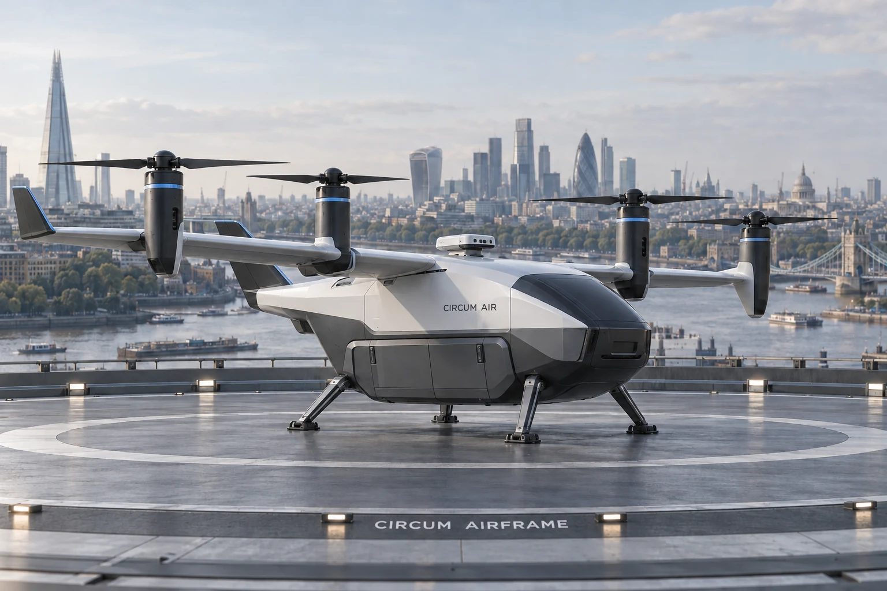
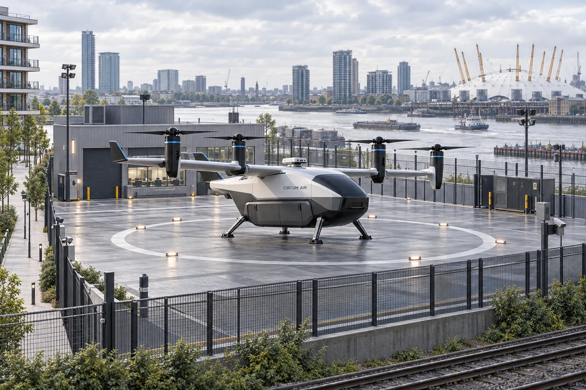
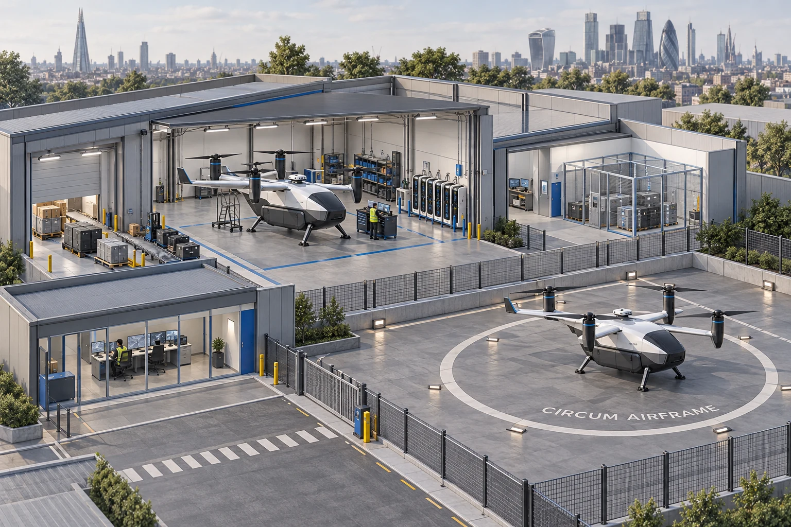

Call your drone
Request collection from your home and choose where your parcel needs to go.
Call a drone.
Let CIRCUM do the delivery.

Our vision is simple: request a drone through CIRCUM, tell us what needs moving and where it needs to go. We take care of the journey.
Request collection from your home and choose where your parcel needs to go.
CIRCUM checks the parcel, route, weather and available aircraft before confirming a suitable flight.
Home collection and delivery, with updates along the way. The collection method depends on safe access and approved operating arrangements.
Drone deliveries will follow CIRCUM’s established pricing.
CIRCUM AIR is our vision for an owned drone delivery service across Greater London. Built around the things people need to send, and the places they need to reach.
In development. Service launch depends on aircraft validation, safe routes and regulatory authorisation.

A drone doesn’t need to return to where it started. CIRCUM ONE brings the fleet, hubs and resources together, so every aircraft can use any suitable approved hub.

If conditions change, the aircraft would divert early to a safe, reachable, approved hub. Its departure hub never dictates the return.
Eight shared hubs across four planning zones. South starts with London Bridge and Croydon; the other locations are candidates for assessment.
Planning locations, not approved operating sites. The fleet size and network remain development targets.
Our future vision brings the convenience of CIRCUM to the skies.
Aircraft validation, safe routes and authorised trials come first.